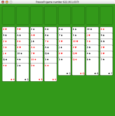

フリーセルのヘルプ
フリーセルのヘルプ
フリーセルとは?
フリーセルは一人遊びのカードゲームです。すべてのゲームは、あなたが適切にカードを動かしさえすれば、かならず勝てるように作られています。 テーブルには自由に使える4つのカード置き場(左上)、積み重ねることができる4つのカード置き場(右上)、そして8つのカード列があります(下)。
 切られたカードが、8つの列に表を向けて配られます。すべてのカードをテーブルの上の右上の4つのカード置き場にすべて動かすことができれば、あなたの勝ちです。カード置き場へは、カードの数字が若い順におかなければなりません、つまり、エースが一番したで、キングが一番上になります。
カードはある列から別の列へ動かすこともできます。ただし、すこしだけ決まりがあります。動かす先の列の一番下のカードは、動かしたいカードよりひとつだけ数字が大きくなければなりません。また、動かしたいカードとは違う色でなければなりません。例えば、ハートの5をクラブの6の下へ動かすことができます。
最後に、左上のカード置き場の使い方です。ここへは、どんなカードでも一枚だけ置くことができます。また、空になった列にもカードを置くことができます。